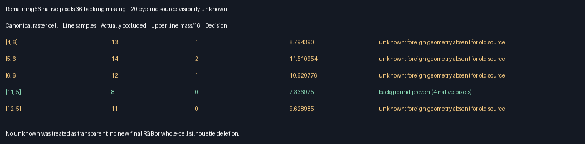
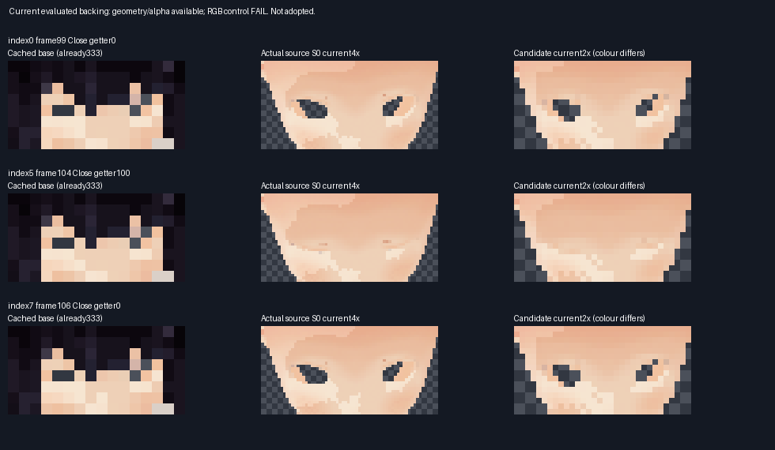
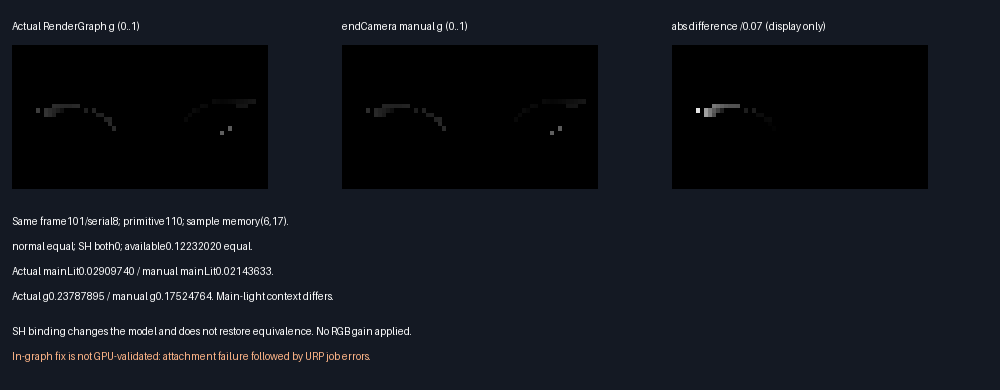

제품 77 유지 · 전체 후보 미채택. 실제 19프레임을 확보했으며, 뒤의 Graph 시도 두 번은 0프레임으로 실패했습니다. 소유 UnsafePass 수정안은 컴파일만 통과했습니다. URP 내부 job 상태를 확인하지 못해 추가 GPU 실행은 보류했습니다. 초기화·강제 종료·renderer 강제 정리·입력 설정 객체 교체는 하지 않았습니다.
최종 수치/실행 상태 · 읽기 전용 재현 검사 · 이전90 한 셀 결과
old source frame140의 56 native pixels는 backing 부재36개와 안검 선20개입니다. 안검20개는 특징 로컬5셀에 해당합니다. 실제 같은 프레임 메쉬의110 query를 재교차했고 앞쪽178 UV의 원본 알파를 공개 API로 읽었습니다. 이전 unknown이던47개 하위 표본에서 실제 앞쪽 불투명 면을 확인했습니다. 이는47개의 최종 픽셀을 삭제했다는 뜻이 아닙니다.

현재 보수적 질량 기준에서 한 셀은 새 특징 대입 없음(label0), 네 셀은 미확정입니다. label0은 바탕 RGB나 투명색으로 바꾸라는 뜻이 아니며, 얇은 안검을 지워도 미술적으로 옳다는 판정도 아닙니다. 남은16 native pixels는 old source의 몸/머리 exact ray 기하가 없어 가시성을 확정하지 않았습니다. 새 프레임의 기하를 old sourceId에 섞지 않았습니다.
좌표별 hit·UV·알파·질량 범위 / 원본 query / Unity 실제 알파178표본/890 getter
기존 실제 부재96 누적표본은 모두 각자의 old 프레임에서 앞면 피부 기하와 불투명 알파가 있었습니다. source frame138–141의 실제 target ray로 판정했으며, 새 프레임의 RGB로 채우지 않았습니다. 이는 피부 레이어 존재의 증거이고 최종 가림 owner의 선택 완료가 아닙니다.
새 source91B의 현재 변형 메쉬를 2배 격자에 그리는 공급기를 구현해 실제 Close/재개방8프레임을 관측했습니다. 피부 픽셀 수는414→429→436→414, 기존 특징이 차지했으나 backing이 없던 셀 중 새 피부가 완전히 제공된 수는0→1→4→0입니다. 피부·안검·홍채·다른 앞머리의 최종 합성은 별도입니다.

위 중앙·오른쪽은 피부 레이어만이며 전체 눈 출력이 아닙니다. 오른쪽을 얼굴 전체에 덮어씌우지 않았습니다. 같은4배 raster의 RGBA 대조 최대 오차0.15859377이 남아 공급기를 최종 색으로 채택하지 않았습니다. 화면 blur·RGB 평균·임의 피부색·깊이 보정은 없습니다.
old96 기하·알파 근거 / 새 프레임별 source/backing 대조 / 실행된 공급기 Bind/Render/Dispose
수동 draw의 SH=0을 보고 실제 환경 SH 전달 A/B를 수행했지만 일부 원래 맞던 표본까지 달라져 채택하지 않았습니다. 이어 정상 RenderGraph S3 생산자 자체의 normal·SH·광원 합계를 실제로 기록했습니다. 임시 메타데이터 재질과 head samplesOnly는 종료 전에 복원했고, 이 세 프레임은 최종 미관 비교에 쓰지 않습니다.

| 같은 frame101/serial8, primitive110 | 정상 생산자 | 수동 draw |
|---|---|---|
| normal 차이 / SH 차이 | 0 / 0 (두 GPU 경로 모두 SH=0) | |
| available | 0.1223201975 | 0.1223201975 |
| 주광 lit | 0.0290974006 | 0.0214363262 |
| g | 0.2378789485 | 0.1752476394 |
차이는 주광 항의 실행 context로 좁혀졌습니다. 정확히 shadow texture 수명인지, 방향/감쇠 상태의 어느 항인지는 아직 확정하지 않았습니다. 정상 생산자에서도 SH가0이었다는 사실과 CPU ambientProbe가 비영이라는 사실을 구분합니다. CPU SH를 원본 동등성의 증명으로 강제하거나 g에 맞춘 RGB 배율을 넣지 않습니다.
실제 정상 생산자 수치 / 무바인딩 대조 / 실제 SH 바인딩 A/B
Graph 내부에서 그림자 자원을 명시하는 경로를 준비했습니다. 첫 시도는 추가 카메라 컴포넌트가 필수라는 제 관측기의 잘못된 전제로 실패했습니다. 설치 URP의 정상 기본 renderer 경로로 수정한 다음 시도는 native attachment 총8개 제한에 8색+depth를 넘겨 실패했고, 뒤이어 ZBinningJob safety 오류가 발생했습니다. 두 시도 모두 새 유효 프레임0입니다.
GraphSources93.RecordRenderGraph/Draw의 최신 수정은 소유 UnsafePass 안에서 모든 출력과 shadow 입력을 선언하여 native raster attachment 묶음을 피합니다. 전체 외부 컴파일은 성공했지만 GPU로 실행하지 않았습니다. 내부 job을 추정 완료시키거나 사용자 renderer를 Dispose하지 않았습니다. 안전한 정상 정리/재생성 경로 확인과 이후 최소 재검증이 필요합니다.
실제 오류·차단 상태 / 정확한 스택·시점·설치 소스와 인과 추론의 한계 / 최신 컴파일 전용 수정안 / 컴파일 실행 결과
UnsafePass는 Unity의 정식 CommandBuffer/RenderGraph API입니다. 승인·보안 설정을 건너뛰지 않습니다. 22:44:20 attachment compiler 오류가 먼저이며 같은 시각부터22:44:21까지 ZBinningJob safety 오류8건이 뒤따릅니다. 설치 ForwardLights 소스는 PreSetup에서 job을 예약하고 SetupLights/정리 경로에서 Complete합니다. 컴파일 중단이 실행 완료 지점을 건너뛸 수 있다는 소스 기반 설명이며, live private handle을 확인했다는 뜻은 아닙니다.
실행한5회 Play는 모두 정상 종료됐습니다. 별도 public/native 비교47개, Edit·scene clean·dirty31·InputSettings ID/22필드·장치·옵션·시간·pipeline/global 값과 RT30→30을 확인했습니다. 이는 URP 내부 async job의 동등성 증명은 아닙니다. 내부 할당 증가를 물리 RAM/누수 확정으로 바꾸지 않습니다. C# Assets import·제품 기본 전환·SaveAssets·ClearDirty·CUA·삭제·reset·강제종료·push는 없습니다.
기존32개 보호 파일과 사용자 tracked 변경30개를 보존하고 이번 독립 probe 자산·실험·인계만 선별 커밋합니다. python -B test_archive91.py는 쓰기/Unity 호출 없이 실제 old 기하110query,178 알파,96표본,19개 raw marker/plane identity 및 실패 상태를 검증합니다. 이전89 raw archive가 같은 experiments 부모 폴더에 필요합니다.
SH 패킹은 Unity 공식 CopySHCoefficientArraysFrom과 기존 trial27 코드를 참고했습니다. 실제 대조가 실패한 SH 전환은 제품에 적용하지 않았습니다.